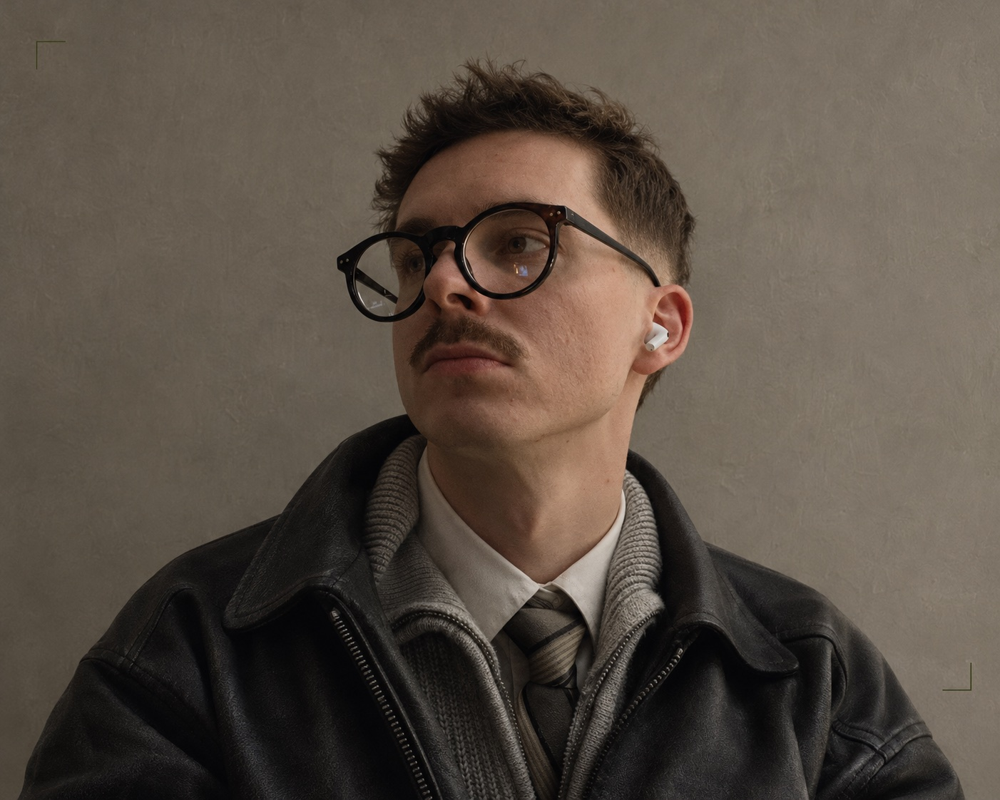
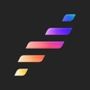

About
A designer’s eye for everyday objects.
I’m Kacper Papuszka.
I design lighting, desk accessories and everyday electronics in Szczecin, Poland.
I use CAD models to explore an object’s proportions, then render it to see what light reveals about its surface. With the Ribbed lamp, I was interested in one curve in particular: how a wide shade could narrow into a foot without a visible join.
Explore my work →
Education
- 2025
- Bachelor of Engineering in Teleinformatics
- 2026 – present
- Master’s studies in Management and Production Engineering
West Pomeranian University of Technology in Szczecin
Currently
I combine part-time graduate studies with an internship at PACO Engineering, where I help organise project documentation. In my own design work, I’m exploring lighting and desktop objects through CAD models and renders.
Tools I use
- BlenderRendering
- Fusion 360CAD modeling
- ProcreateSketching

Procreate DreamsMotion studies- AffinityGraphic design
- FigmaInterface design